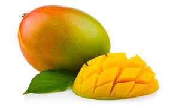

Tentangbuah.com
Mangga

Mangga atau mempelam adalah nama
sejenis buah, demikian pula nama pohonnya. Mangga termasuk ke dalam
marga Mangifera, yang terdiri dari 35-40 anggota dari suku
Anacardiaceae.
Nama "mangga" berasal dari bahasa Tamil, mankay, yang
berarti man "pohon mangga" + kay "buah".[2] Kata
ini dibawa ke Eropa oleh orang-orang Portugis dan diserap menjadi
manga (bahasa Portugis), mango (bahasa Inggris) dan lainnya.[2]
Mangga berasal dari daerah di sekitar perbatasan India dengan Burma,
dan mangga telah menyebar ke Asia Tenggara sekurang-kurangnya
semenjak 1500 tahun yang silam.[3][4] Buah ini dikenal pula dalam
berbagai bahasa daerah, seperti
pelem atau poh
(Jw.).
Khasiat Mangga
- Membantu pencernaan
- Menyembukan Anemia
- Mengatasi Obesitas
- Mencegah Kanker
- Menjaga Kesehatan Jantung
Daftar Harga
| Jenis buah | Harga | |
|---|---|---|
| Perkilo | Perbiji | |
| Mangga Manalagi | 50000 | 5000 |
| Mangga Arumanis | 60000 | 6000 |
| Mangga Golek | 70000 | 7000 |
| Mangga Madu | 55000 | 5500 |